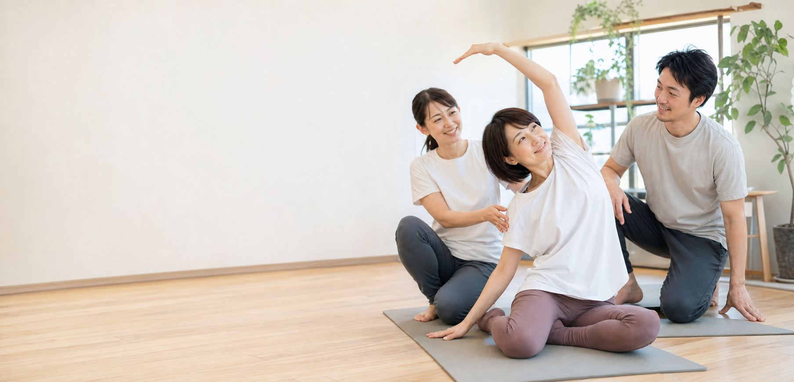

姿勢と呼吸
力みを抜き、体を動かしやすい状態へ。まずは無理なく整う感覚をつくります。

運動が苦手な大人女性へ
筋トレも、ヨガも、ピラティスも続かなかった。
それは意志が弱いからではなく、
体がまだ運動を受け入れる準備をしていなかっただけかもしれません。
Concept
B-TRは、あらゆる運動と日常動作の土台を整える「運動の準備」専門パーソナルスタジオです。
いきなり重いトレーニングをするのではなく、姿勢・呼吸・股関節・胸郭など、体の基本的な動きを一人ひとりのペースで整えます。
まず目指すのは、体が軽く感じること。歩く、立つ、階段を上る。そんな日常の動きが楽になることで、自然と活動量が増え、健康づくりや引き締まった体へつながっていきます。
For You
運動した方がいいとは思うけれど、何から始めればいいかわからない
ジムや筋トレに挑戦したけれど、体が痛くなって続かなかった
人目が気になって、大型ジムに通うのは少し不安
ダイエットしたい気持ちはあるけれど、激しい運動には自信がない
最近、歩く・階段・立ちっぱなしが前より疲れる
自分のペースで、安心して続けられる場所を探している
Program
力みを抜き、体を動かしやすい状態へ。まずは無理なく整う感覚をつくります。
歩く、立つ、階段を上る動きに関わる土台を確認し、日常動作を楽にします。
背中や肩のこわばりをほどき、上半身が自然に動く感覚を取り戻します。
追い込む運動ではなく、家でも続けられる準備運動レベルから始めます。
Change
Private Studio
大型ジムのような威圧感はありません。周りの目を気にせず、自分の体と向き合えるパーソナル空間です。
マンツーマンはもちろん、ご夫婦やご友人とのペアレッスンにも対応。運動に自信がない方、健康維持をしたい方もご相談ください。
一人ひとりの体の状態に合わせて、無理なく丁寧に進めます。
ご夫婦・親子・ご友人で、安心感を持って一緒に始められます。
平日の日中に動ける主婦・ママ層、平日休みの方に通いやすい時間帯です。
Trial Flow
運動経験、痛みや不安、生活の中で楽にしたい動きを伺います。
姿勢や呼吸、股関節などを無理のない範囲で確認します。
その方に合った「運動の準備」を体験していただきます。
通い方や家でできることを、生活に合わせてご案内します。
First Step
運動が苦手でも大丈夫です。頑張る前に、あなたの体が動きやすくなる入口を一緒に見つけましょう。
平日日中 体験受付中
所要時間・料金・空き枠は、予約フォームまたは公式LINEでご案内します。
体験予約を相談する メールリンクは仮設定です。公開時に予約フォームやLINE URLへ差し替えてください。